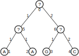

Exercise sheet 11: Tree Max Likelihood
Exercise 1 - Tree Max Likelihood
Thomas H. Jukes and Charles Cantor (1969) found the differences in the evolutionary mutation rates between different nucleotides in DNA to be too small for reasonable modelling. Thus, they introduced the Jukes-Cantor model that assumes equal mutation rate \(\alpha\) for each non-preserving nucleotide mutation.
As introduced in the lecture this results in the following formulae:
\[ \lambda = \begin{pmatrix} -3 \alpha & \alpha & \alpha & \alpha \\ \alpha & -3 \alpha & \alpha & \alpha \\ \alpha & \alpha & -3 \alpha & \alpha \\ \alpha & \alpha & \alpha & -3 \alpha \end{pmatrix} \] \[\begin{align} p_{ii}(t) &= \dfrac{1}{4}(1+3e^{-4\alpha t})\\ p_{ij}(t) &= \dfrac{1}{4}(1-e^{-4\alpha t})\\ \end{align}\]
Additional formulae required to solve this exercise sheet:
\[ L_{i,s} = \begin{cases} 1 &if\ the\ i-th\ leaf\ has\ nucleotide\ s\ at\ this\ pos\\ 0 &else \end{cases}\\ \] For inner nodes:
\[ L_{k,s_{k}} = (\sum_{s_i}p_{s_k,s_i}(d_i)L_{i,s_i})(\sum_{s_j}p_{s_k,s_j}(d_j)L_{j,s_j}) \] Where \(s_x\) represents the current nucleotide for node x
\[ L = \sum_{s_0} \pi_{s_0} \times L_{0,s_0}\\ \pi = \dfrac{1}{4} \] Given the transition rate matrix from above for \(\alpha = 1/100\) and the evolutionary tree from below, calculate the conditional likelihood \(L_{k,s_{k}}\) of the nodes 5, 6 and 0, in order to calculate the total tree likelihood using the maximum likelihood approach introduced by Felsenstein.

1a)
Calculate the required values for \(p_{ii}\) and \(p_{ij}\) given the depicted tree.
Hide
Hint: Formulae
\[\begin{align} p_{ii}(1) &= \frac{1}{4} * (1 + 3\times e^{-4\times\frac{1}{100}})\\ p_{ij}(1) &= \frac{1}{4} * (1 - e^{-4\times\frac{1}{100}})\\ p_{ii}(2) &= \frac{1}{4} * (1 + 3\times e^{-4\times 2\times\frac{1}{100}})\\ p_{ij}(2) &= \frac{1}{4} * (1 - e^{-4\times 2 \times \frac{1}{100}}) \end{align}\]
Solution
\[\begin{align} p_{ii}(1) &= 0.9705920793642424 \\ p_{ij}(1) &= 0.009802640211919206 \\ p_{ii}(2) &= 0.9423372597899768 \\ p_{ij}(2) &= 0.01922091340334106 \end{align}\]
1b)
Calculate the conditional likelihood for node 5, \(L_{5,s_5}\) , using the information of node 1 and 2.
Hide
Hint: Formulae
\[\begin{align*} L_{5,A} = &\:(p_{A,A}(1) \times L_{1,A} + p_{A,C}(1) \times L_{1,C} + p_{A,G}(1) \times L_{1,G} + p_{A,T}(1) \times L_{1,T}) \\ \times &\:(p_{A,A}(1) \times L_{2,A} + p_{A,C}(1) \times L_{2,C} + p_{A,G}(1) \times L_{2,G} + p_{A,T}(1) \times L_{2,T}) \\ L_{5,C} = &\:(p_{C,A}(1) \times L_{1,A} + p_{C,C}(1) \times L_{1,C} + p_{C,G}(1) \times L_{1,G} + p_{C,T}(1) \times L_{1,T}) \\ \times &\:(p_{C,A}(1) \times L_{2,A} + p_{C,C}(1) \times L_{2,C} + p_{C,G}(1) \times L_{2,G} + p_{C,T}(1) \times L_{2,T}) \\ L_{5,G} = &\:(p_{G,A}(1) \times L_{1,A} + p_{G,C}(1) \times L_{1,C} + p_{G,G}(1) \times L_{1,G} + p_{G,T}(1) \times L_{1,T}) \\ \times &\:(p_{G,A}(1) \times L_{2,A} + p_{G,C}(1) \times L_{2,C} + p_{G,G}(1) \times L_{2,G} + p_{G,T}(1) \times L_{2,T}) \\ L_{5,T} = &\:(p_{T,A}(1) \times L_{1,A} + p_{T,C}(1) \times L_{1,C} + p_{T,G}(1) \times L_{1,G} + p_{T,T}(1) \times L_{1,T}) \\ \times &\:(p_{T,A}(1) \times L_{2,A} + p_{T,C}(1) \times L_{2,C} + p_{T,G}(1) \times L_{2,G} + p_{T,T}(1) \times L_{2,T}) \end{align*}\]
Solution
\[\begin{align*} L_{5,A} = &\:(0.970592 \times 1.000000 + 0.009803 \times 0.000000 + 0.009803 \times 0.000000 + 0.009803 \times 0.000000) \\ \times &\:(0.970592 \times 1.000000 + 0.009803 \times 0.000000 + 0.009803 \times 0.000000 + 0.009803 \times 0.000000)\\ L_{5,A} = &\: 0.942049 \\ L_{5,C} = &\:(0.009803 \times 1.000000 + 0.970592 \times 0.000000 + 0.009803 \times 0.000000 + 0.009803 \times 0.000000) \\ \times &\:(0.009803 \times 1.000000 + 0.970592 \times 0.000000 + 0.009803 \times 0.000000 + 0.009803 \times 0.000000) \\ L_{5,C} = &\: 0.000096 \\ L_{5,G} = &\:(0.009803 \times 1.000000 + 0.009803 \times 0.000000 + 0.970592 \times 0.000000 + 0.009803 \times 0.000000) \\ \times &\:(0.009803 \times 1.000000 + 0.009803 \times 0.000000 + 0.970592 \times 0.000000 + 0.009803 \times 0.000000) \\ L_{5,G} = &\: 0.000096 \\ L_{5,T} = &\:(0.009803 \times 1.000000 + 0.009803 \times 0.000000 + 0.009803 \times 0.000000 + 0.970592 \times 0.000000) \\ \times &\:(0.009803 \times 1.000000 + 0.009803 \times 0.000000 + 0.009803 \times 0.000000 + 0.970592 \times 0.000000) \\ L_{5,T} = &\: 0.000096 \end{align*}\]
1c)
Calculate the conditional likelihood for node 6, \(L_{6,s_6}\) , using the information of node 3 and 4.
Hide
Hint: Formulae
\[\begin{align*} L_{6,A} = &\:(p_{A,A}(1) \times L_{3,A} + p_{A,C}(1) \times L_{3,C} + p_{A,G}(1) \times L_{3,G} + p_{A,T}(1) \times L_{3,T}) \\ \times &\:(p_{A,A}(2) \times L_{4,A} + p_{A,C}(2) \times L_{4,C} + p_{A,G}(2) \times L_{4,G} + p_{A,T}(2) \times L_{4,T}) \\ L_{6,C} = &\:(p_{C,A}(1) \times L_{3,A} + p_{C,C}(1) \times L_{3,C} + p_{C,G}(1) \times L_{3,G} + p_{C,T}(1) \times L_{3,T}) \\ \times &\:(p_{C,A}(2) \times L_{4,A} + p_{C,C}(2) \times L_{4,C} + p_{C,G}(2) \times L_{4,G} + p_{C,T}(2) \times L_{4,T}) \\ L_{6,G} = &\:(p_{G,A}(1) \times L_{3,A} + p_{G,C}(1) \times L_{3,C} + p_{G,G}(1) \times L_{3,G} + p_{G,T}(1) \times L_{3,T}) \\ \times &\:(p_{G,A}(2) \times L_{4,A} + p_{G,C}(2) \times L_{4,C} + p_{G,G}(2) \times L_{4,G} + p_{G,T}(2) \times L_{4,T}) \\ L_{6,T} = &\:(p_{T,A}(1) \times L_{3,A} + p_{T,C}(1) \times L_{3,C} + p_{T,G}(1) \times L_{3,G} + p_{T,T}(1) \times L_{3,T}) \\ \times &\:(p_{T,A}(2) \times L_{4,A} + p_{T,C}(2) \times L_{4,C} + p_{T,G}(2) \times L_{4,G} + p_{T,T}(2) \times L_{4,T}) \\ \end{align*}\]
Solution
\[\begin{align*} L_{6,A} = &\:(0.970592 \times 0.000000 + 0.009803 \times 0.000000 + 0.009803 \times 1.000000 + 0.009803 \times 0.000000) \\ \times &\:(0.942337 \times 0.000000 + 0.019221 \times 1.000000 + 0.019221 \times 0.000000 + 0.019221 \times 0.000000) \\ L_{6,A} = &\: 0.000188 \\ L_{6,C} = &\:(0.009803 \times 0.000000 + 0.970592 \times 0.000000 + 0.009803 \times 1.000000 + 0.009803 \times 0.000000) \\ \times &\:(0.019221 \times 0.000000 + 0.942337 \times 1.000000 + 0.019221 \times 0.000000 + 0.019221 \times 0.000000) \\ L_{6,C} = &\: 0.009237 \\ L_{6,G} = &\:(0.009803 \times 0.000000 + 0.009803 \times 0.000000 + 0.970592 \times 1.000000 + 0.009803 \times 0.000000) \\ \times &\:(0.019221 \times 0.000000 + 0.019221 \times 1.000000 + 0.942337 \times 0.000000 + 0.019221 \times 0.000000) \\ L_{6,C} = &\: 0.018656 \\ L_{6,T} = &\:(0.009803 \times 0.000000 + 0.009803 \times 0.000000 + 0.009803 \times 1.000000 + 0.970592 \times 0.000000) \\ \times &\:(0.019221 \times 0.000000 + 0.019221 \times 1.000000 + 0.019221 \times 0.000000 + 0.942337 \times 0.000000) \\ L_{6,T} = &\: 0.000188 \\ \end{align*}\]
1d)
Calculate the conditional likelihood for node 0, \(L_{0,s_0}\) , using the information of node 5 and 6.
Hide
Hint: Formulae
\[\begin{align*} L_{0,A} = &\:(p_{A,A}(1) \times L_{5,A} + p_{A,C}(1) \times L_{5,C} + p_{A,G}(1) \times L_{5,G} + p_{A,T}(1) \times L_{5,T}) \\ \times &\:(p_{A,A}(2) \times L_{6,A} + p_{A,C}(2) \times L_{6,C} + p_{A,G}(2) \times L_{6,G} + p_{A,T}(2) \times L_{6,T}) \\ L_{0,C} = &\:(p_{C,A}(1) \times L_{5,A} + p_{C,C}(1) \times L_{5,C} + p_{C,G}(1) \times L_{5,G} + p_{C,T}(1) \times L_{5,T}) \\ \times &\:(p_{C,A}(2) \times L_{6,A} + p_{C,C}(2) \times L_{6,C} + p_{C,G}(2) \times L_{6,G} + p_{C,T}(2) \times L_{6,T}) \\ L_{0,G} = &\:(p_{G,A}(1) \times L_{5,A} + p_{G,C}(1) \times L_{5,C} + p_{G,G}(1) \times L_{5,G} + p_{G,T}(1) \times L_{5,T}) \\ \times &\:(p_{G,A}(2) \times L_{6,A} + p_{G,C}(2) \times L_{6,C} + p_{G,G}(2) \times L_{6,G} + p_{G,T}(2) \times L_{6,T}) \\ L_{0,T} = &\:(p_{T,A}(1) \times L_{5,A} + p_{T,C}(1) \times L_{5,C} + p_{T,G}(1) \times L_{5,G} + p_{T,T}(1) \times L_{5,T}) \\ \times &\:(p_{T,A}(2) \times L_{6,A} + p_{T,C}(2) \times L_{6,C} + p_{T,G}(2) \times L_{6,G} + p_{T,T}(2) \times L_{6,T}) \end{align*}\]
Solution
\[\begin{align*} L_{0,A} = &\:(0.970592 \times 0.942049 + 0.009803 \times 0.000096 + 0.009803 \times 0.000096 + 0.009803 \times 0.000096) \\ \times &\:(0.942337 \times 0.000188 + 0.019221 \times 0.009237 + 0.019221 \times 0.018656 + 0.019221 \times 0.000188) \\ L_{0,A} = &\: 0.000656 \\ L_{0,C} = &\:(0.009803 \times 0.942049 + 0.970592 \times 0.000096 + 0.009803 \times 0.000096 + 0.009803 \times 0.000096) \\ \times &\:(0.019221 \times 0.000188 + 0.942337 \times 0.009237 + 0.019221 \times 0.018656 + 0.019221 \times 0.000188) \\ L_{0,C} = &\: 0.000085 \\ L_{0,G} = &\:(0.009803 \times 0.942049 + 0.009803 \times 0.000096 + 0.970592 \times 0.000096 + 0.009803 \times 0.000096) \\ \times &\:(0.019221 \times 0.000188 + 0.019221 \times 0.009237 + 0.942337 \times 0.018656 + 0.019221 \times 0.000188) \\ L_{0,G} = &\: 0.000166 \\ L_{0,T} = &\:(0.009803 \times 0.942049 + 0.009803 \times 0.000096 + 0.009803 \times 0.000096 + 0.970592 \times 0.000096) \\ \times &\:(0.019221 \times 0.000188 + 0.019221 \times 0.009237 + 0.019221 \times 0.018656 + 0.942337 \times 0.000188) \\ L_{0,T} = &\: 0.000007 \end{align*}\]
1e)
Calculate the total tree likelihood for the given tree.
Hide
Hint: Formulae
\[\begin{align*} L = (\pi \times L_{0,A}) + (\pi \times L_{0,C}) + (\pi \times L_{0,G}) + (\pi \times L_{0,T}) \end{align*}\]
Solution
\[\begin{align*} L &= \frac{1}{4} * 0.000656 + \frac{1}{4} * 0.000085 \\ &+ \frac{1}{4} * 0.000166 + \frac{1}{4} * 0.000007 \\ L &= 0.000228 \end{align*}\]
Exercise 2 - Programming assignment
Programming assignments are available via Github Classroom and contain automatic tests.
We recommend doing these assignments since they will help you to further understand this topic.
Access the Github Classroom link: Programming Assignment: Sheet 11.